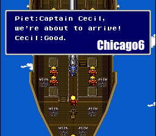

Upload your FF4 Ultima Plus ROM and choose a new font.
Fonts that are available:
- Chicago6
- Clean Font by xJ4cks
- Monocraft
- mrBrawndo's Ultima IV Font
- Stick Font
- Wide Advance
- Chicago6 (SquishBGone)
- Clean Font by xJ4cks (SquishBGone)
- Monocraft (SquishBGone)
- mrBrawndo's Ultima IV Font (SquishBGone)
- Stick Font (SquishBGone)
- Wide Advance (SquishBGone)
- I-NES (SquishBGone)

What are SquishBGone fonts? They rename some things in the game to use as few double letter "squish" tiles as possible. All "SquishBGone" work accomplished by FlamePurge.